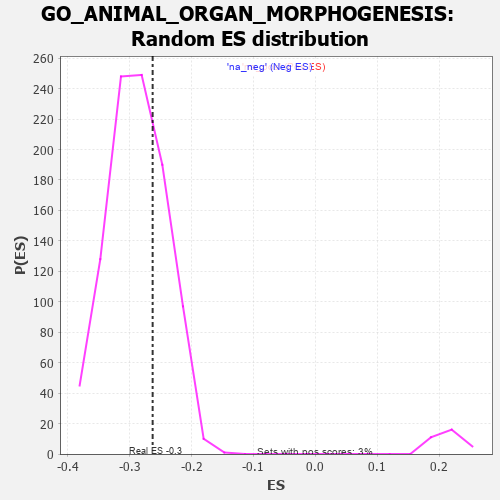

| | | Dataset | 7d |
| Phenotype | NoPhenotypeAvailable |
| Upregulated in class | na_neg |
| GeneSet | GO_ANIMAL_ORGAN_MORPHOGENESIS |
| Enrichment Score (ES) | -0.2629316 |
| Normalized Enrichment Score (NES) | -0.9110515 |
| Nominal p-value | 0.696281 |
| FDR q-value | 0.94266945 |
| FWER p-Value | 1.0 |
Table: GSEA Results Summary
 Fig 1: Enrichment plot: GO_ANIMAL_ORGAN_MORPHOGENESIS
Fig 1: Enrichment plot: GO_ANIMAL_ORGAN_MORPHOGENESIS
Profile of the Running ES Score & Positions of GeneSet Members on the Rank Ordered List
| PROBE | GENE SYMBOL | GENE_TITLE | RANK IN GENE LIST | RANK METRIC SCORE | RUNNING ES | CORE ENRICHMENT | | 1 | HMX3 | | | 17 | 4.775 | 0.0338 | No |
| 2 | SIX2 | | | 40 | 3.152 | 0.0547 | No |
| 3 | TGFB3 | | | 49 | 2.654 | 0.0737 | No |
| 4 | EMX2 | | | 117 | 1.451 | 0.0760 | No |
| 5 | SP3 | | | 131 | 1.391 | 0.0848 | No |
| 6 | FOXF1 | | | 176 | 1.136 | 0.0876 | No |
| 7 | RORB | | | 189 | 1.097 | 0.0944 | No |
| 8 | WNT16 | | | 198 | 1.072 | 0.1014 | No |
| 9 | E2F5 | | | 225 | 0.992 | 0.1055 | No |
| 10 | LBX1 | | | 254 | 0.929 | 0.1089 | No |
| 11 | TBX20 | | | 267 | 0.880 | 0.1140 | No |
| 12 | HGF | | | 276 | 0.870 | 0.1195 | No |
| 13 | SHOX2 | | | 288 | 0.842 | 0.1244 | No |
| 14 | DLL1 | | | 337 | 0.760 | 0.1240 | No |
| 15 | GSK3A | | | 351 | 0.745 | 0.1279 | No |
| 16 | AXIN2 | | | 383 | 0.713 | 0.1293 | No |
| 17 | BAX | | | 387 | 0.711 | 0.1342 | No |
| 18 | ALX4 | | | 413 | 0.686 | 0.1362 | No |
| 19 | SUFU | | | 443 | 0.665 | 0.1374 | No |
| 20 | SRF | | | 542 | 0.615 | 0.1294 | No |
| 21 | NLE1 | | | 565 | 0.609 | 0.1311 | No |
| 22 | ALX1 | | | 590 | 0.598 | 0.1325 | No |
| 23 | PITX3 | | | 594 | 0.596 | 0.1366 | No |
| 24 | HES5 | | | 661 | 0.571 | 0.1324 | No |
| 25 | FST | | | 698 | 0.560 | 0.1319 | No |
| 26 | ID1 | | | 719 | 0.555 | 0.1335 | No |
| 27 | ZIC3 | | | 760 | 0.542 | 0.1324 | No |
| 28 | STOX1 | | | 905 | 0.506 | 0.1176 | No |
| 29 | TDRD7 | | | 936 | 0.498 | 0.1175 | No |
| 30 | PDCD4 | | | 941 | 0.497 | 0.1207 | No |
| 31 | LRIG1 | | | 946 | 0.497 | 0.1240 | No |
| 32 | DVL3 | | | 971 | 0.490 | 0.1245 | No |
| 33 | WDR48 | | | 975 | 0.489 | 0.1278 | No |
| 34 | YAP1 | | | 1041 | 0.475 | 0.1230 | No |
| 35 | MEF2C | | | 1054 | 0.473 | 0.1250 | No |
| 36 | RBM15 | | | 1057 | 0.473 | 0.1283 | No |
| 37 | DGCR6 | | | 1078 | 0.467 | 0.1293 | No |
| 38 | SRC | | | 1128 | 0.459 | 0.1264 | No |
| 39 | EMX1 | | | 1143 | 0.455 | 0.1280 | No |
| 40 | PSMD7 | | | 1152 | 0.454 | 0.1304 | No |
| 41 | PSMD2 | | | 1181 | 0.450 | 0.1301 | No |
| 42 | CARM1 | | | 1413 | 0.408 | 0.1033 | No |
| 43 | E2F4 | | | 1501 | 0.390 | 0.0950 | No |
| 44 | SOS1 | | | 1547 | 0.384 | 0.0921 | No |
| 45 | FZD1 | | | 1574 | 0.379 | 0.0916 | No |
| 46 | RXRA | | | 1647 | 0.365 | 0.0850 | No |
| 47 | WWOX | | | 1688 | 0.359 | 0.0825 | No |
| 48 | PLOD3 | | | 1715 | 0.353 | 0.0818 | No |
| 49 | MEIS1 | | | 1723 | 0.351 | 0.0836 | No |
| 50 | LRP5 | | | 1769 | 0.342 | 0.0803 | No |
| 51 | PSMD4 | | | 1811 | 0.335 | 0.0775 | No |
| 52 | ABR | | | 1812 | 0.335 | 0.0801 | No |
| 53 | SGPL1 | | | 1820 | 0.334 | 0.0817 | No |
| 54 | GATA4 | | | 1837 | 0.330 | 0.0821 | No |
| 55 | AP2S1 | | | 1846 | 0.329 | 0.0835 | No |
| 56 | TCF7 | | | 1848 | 0.328 | 0.0859 | No |
| 57 | PSMD6 | | | 1858 | 0.326 | 0.0872 | No |
| 58 | SMAD4 | | | 1860 | 0.326 | 0.0895 | No |
| 59 | TLE3 | | | 1863 | 0.325 | 0.0917 | No |
| 60 | CUL3 | | | 1893 | 0.321 | 0.0903 | No |
| 61 | ROR1 | | | 1993 | 0.306 | 0.0798 | No |
| 62 | MEIS2 | | | 2063 | 0.296 | 0.0731 | No |
| 63 | FOXD1 | | | 2093 | 0.292 | 0.0716 | No |
| 64 | BMP7 | | | 2107 | 0.290 | 0.0721 | No |
| 65 | PSME4 | | | 2143 | 0.285 | 0.0697 | No |
| 66 | DDR1 | | | 2176 | 0.280 | 0.0677 | No |
| 67 | SYK | | | 2186 | 0.278 | 0.0686 | No |
| 68 | MEIS3 | | | 2188 | 0.278 | 0.0706 | No |
| 69 | PSMF1 | | | 2251 | 0.268 | 0.0646 | No |
| 70 | UBE4B | | | 2313 | 0.258 | 0.0586 | No |
| 71 | HIPK2 | | | 2389 | 0.247 | 0.0508 | No |
| 72 | LHX9 | | | 2393 | 0.247 | 0.0522 | No |
| 73 | PBX4 | | | 2406 | 0.245 | 0.0525 | No |
| 74 | VSX1 | | | 2473 | 0.231 | 0.0457 | No |
| 75 | PSMD5 | | | 2560 | 0.218 | 0.0362 | No |
| 76 | ROGDI | | | 2633 | 0.207 | 0.0285 | No |
| 77 | ATRN | | | 2640 | 0.207 | 0.0293 | No |
| 78 | ARID2 | | | 2664 | 0.204 | 0.0278 | No |
| 79 | DSCAM | | | 2689 | 0.200 | 0.0262 | No |
| 80 | KDM6A | | | 2690 | 0.200 | 0.0277 | No |
| 81 | PHB2 | | | 2712 | 0.197 | 0.0265 | No |
| 82 | SLIT2 | | | 2724 | 0.195 | 0.0265 | No |
| 83 | CUL1 | | | 2735 | 0.193 | 0.0267 | No |
| 84 | NSD2 | | | 2784 | 0.185 | 0.0219 | No |
| 85 | AQP3 | | | 2796 | 0.184 | 0.0219 | No |
| 86 | FGFR2 | | | 2895 | 0.167 | 0.0104 | No |
| 87 | ACVR1 | | | 2932 | 0.161 | 0.0070 | No |
| 88 | WNT4 | | | 3023 | 0.146 | -0.0036 | No |
| 89 | LEF1 | | | 3037 | 0.144 | -0.0042 | No |
| 90 | HDAC1 | | | 3086 | 0.138 | -0.0093 | No |
| 91 | LHX3 | | | 3092 | 0.138 | -0.0089 | No |
| 92 | BTBD7 | | | 3143 | 0.131 | -0.0144 | No |
| 93 | FOXN3 | | | 3159 | 0.129 | -0.0154 | No |
| 94 | PAX6 | | | 3170 | 0.127 | -0.0157 | No |
| 95 | PSMD9 | | | 3179 | 0.125 | -0.0158 | No |
| 96 | SMAD3 | | | 3303 | 0.105 | -0.0310 | No |
| 97 | TAB1 | | | 3351 | 0.097 | -0.0363 | No |
| 98 | NFIC | | | 3357 | 0.096 | -0.0362 | No |
| 99 | FMN1 | | | 3363 | 0.095 | -0.0362 | No |
| 100 | SMAD7 | | | 3369 | 0.093 | -0.0361 | No |
| 101 | MED1 | | | 3405 | 0.089 | -0.0400 | No |
| 102 | AP2A2 | | | 3433 | 0.085 | -0.0428 | No |
| 103 | GLI1 | | | 3489 | 0.079 | -0.0493 | No |
| 104 | MAPK3 | | | 3589 | 0.062 | -0.0617 | No |
| 105 | NF1 | | | 3713 | 0.040 | -0.0773 | No |
| 106 | SKI | | | 3762 | 0.032 | -0.0833 | No |
| 107 | XIRP2 | | | 3854 | 0.020 | -0.0949 | No |
| 108 | NIPBL | | | 3900 | 0.010 | -0.1007 | No |
| 109 | JAG2 | | | 3903 | 0.010 | -0.1008 | No |
| 110 | FREM1 | | | 3912 | 0.008 | -0.1018 | No |
| 111 | NRG3 | | | 3925 | 0.005 | -0.1033 | No |
| 112 | GPC6 | | | 3950 | 0.002 | -0.1064 | No |
| 113 | EYA1 | | | 3987 | -0.006 | -0.1110 | No |
| 114 | GCNT4 | | | 4003 | -0.009 | -0.1129 | No |
| 115 | SFRP2 | | | 4065 | -0.018 | -0.1207 | No |
| 116 | ROBO2 | | | 4066 | -0.018 | -0.1205 | No |
| 117 | CSF1 | | | 4074 | -0.019 | -0.1213 | No |
| 118 | TCF15 | | | 4077 | -0.020 | -0.1214 | No |
| 119 | WNT2 | | | 4084 | -0.021 | -0.1220 | No |
| 120 | MTOR | | | 4114 | -0.025 | -0.1256 | No |
| 121 | ABL1 | | | 4125 | -0.027 | -0.1267 | No |
| 122 | PDX1 | | | 4179 | -0.038 | -0.1333 | No |
| 123 | EXOC4 | | | 4182 | -0.039 | -0.1332 | No |
| 124 | AP2B1 | | | 4185 | -0.039 | -0.1332 | No |
| 125 | FHL2 | | | 4222 | -0.046 | -0.1375 | No |
| 126 | PAX5 | | | 4255 | -0.051 | -0.1413 | No |
| 127 | PSME3 | | | 4280 | -0.056 | -0.1440 | No |
| 128 | WNT11 | | | 4282 | -0.056 | -0.1437 | No |
| 129 | TBX2 | | | 4303 | -0.060 | -0.1458 | No |
| 130 | GCNT3 | | | 4432 | -0.082 | -0.1617 | No |
| 131 | SETD2 | | | 4443 | -0.084 | -0.1624 | No |
| 132 | LAMC1 | | | 4445 | -0.084 | -0.1619 | No |
| 133 | KCNQ4 | | | 4452 | -0.085 | -0.1620 | No |
| 134 | LRRK2 | | | 4467 | -0.087 | -0.1632 | No |
| 135 | ILK | | | 4510 | -0.096 | -0.1679 | No |
| 136 | NTRK2 | | | 4543 | -0.104 | -0.1713 | No |
| 137 | ABI2 | | | 4554 | -0.106 | -0.1718 | No |
| 138 | STX2 | | | 4562 | -0.108 | -0.1719 | No |
| 139 | GATA3 | | | 4614 | -0.120 | -0.1775 | No |
| 140 | ATOH1 | | | 4615 | -0.121 | -0.1766 | No |
| 141 | DLG5 | | | 4619 | -0.121 | -0.1761 | No |
| 142 | SDK1 | | | 4627 | -0.124 | -0.1761 | No |
| 143 | MYLK | | | 4651 | -0.128 | -0.1781 | No |
| 144 | FGFR3 | | | 4656 | -0.129 | -0.1776 | No |
| 145 | PTK7 | | | 4687 | -0.136 | -0.1805 | No |
| 146 | CNNM4 | | | 4738 | -0.147 | -0.1859 | No |
| 147 | POC1A | | | 4768 | -0.151 | -0.1885 | No |
| 148 | PIM1 | | | 4776 | -0.152 | -0.1882 | No |
| 149 | RTN4 | | | 4783 | -0.154 | -0.1879 | No |
| 150 | MYO5A | | | 4787 | -0.155 | -0.1871 | No |
| 151 | FBXW7 | | | 4816 | -0.161 | -0.1895 | No |
| 152 | DLG1 | | | 4860 | -0.169 | -0.1938 | No |
| 153 | SLIT3 | | | 4890 | -0.175 | -0.1962 | No |
| 154 | FZD4 | | | 4940 | -0.186 | -0.2011 | No |
| 155 | EP300 | | | 4941 | -0.186 | -0.1997 | No |
| 156 | PROM1 | | | 4996 | -0.197 | -0.2052 | No |
| 157 | NEK8 | | | 5071 | -0.217 | -0.2132 | No |
| 158 | TBX1 | | | 5166 | -0.241 | -0.2235 | No |
| 159 | PARVA | | | 5187 | -0.245 | -0.2243 | No |
| 160 | SMO | | | 5195 | -0.247 | -0.2233 | No |
| 161 | ASH1L | | | 5203 | -0.248 | -0.2224 | No |
| 162 | PTEN | | | 5262 | -0.261 | -0.2279 | No |
| 163 | FAT1 | | | 5281 | -0.267 | -0.2282 | No |
| 164 | MAGI2 | | | 5295 | -0.269 | -0.2279 | No |
| 165 | NPY2R | | | 5331 | -0.281 | -0.2303 | No |
| 166 | TCF21 | | | 5340 | -0.283 | -0.2292 | No |
| 167 | FZD5 | | | 5386 | -0.292 | -0.2328 | No |
| 168 | SOX8 | | | 5404 | -0.296 | -0.2328 | No |
| 169 | GCNT1 | | | 5426 | -0.301 | -0.2332 | No |
| 170 | STIL | | | 5483 | -0.314 | -0.2381 | No |
| 171 | VDR | | | 5517 | -0.325 | -0.2399 | No |
| 172 | FGFR1 | | | 5543 | -0.332 | -0.2407 | No |
| 173 | ROR2 | | | 5626 | -0.353 | -0.2486 | No |
| 174 | PSMD1 | | | 5674 | -0.367 | -0.2519 | No |
| 175 | SIX6 | | | 5704 | -0.377 | -0.2529 | No |
| 176 | SLIT1 | | | 5735 | -0.387 | -0.2538 | No |
| 177 | ELF3 | | | 5768 | -0.396 | -0.2550 | No |
| 178 | RDH13 | | | 5797 | -0.405 | -0.2555 | No |
| 179 | BBS4 | | | 5806 | -0.407 | -0.2535 | No |
| 180 | ARL6 | | | 5847 | -0.417 | -0.2555 | No |
| 181 | RING1 | | | 5856 | -0.420 | -0.2534 | No |
| 182 | BBS5 | | | 5862 | -0.421 | -0.2509 | No |
| 183 | PCGF2 | | | 5943 | -0.451 | -0.2578 | No |
| 184 | PRDM1 | | | 5956 | -0.457 | -0.2559 | No |
| 185 | XBP1 | | | 6011 | -0.475 | -0.2593 | Yes |
| 186 | PRKX | | | 6016 | -0.477 | -0.2563 | Yes |
| 187 | RAC1 | | | 6036 | -0.484 | -0.2551 | Yes |
| 188 | NR2E3 | | | 6048 | -0.488 | -0.2528 | Yes |
| 189 | EVL | | | 6052 | -0.490 | -0.2495 | Yes |
| 190 | LRIG3 | | | 6055 | -0.492 | -0.2461 | Yes |
| 191 | JAG1 | | | 6060 | -0.494 | -0.2429 | Yes |
| 192 | FBN1 | | | 6080 | -0.499 | -0.2416 | Yes |
| 193 | IFT80 | | | 6135 | -0.515 | -0.2447 | Yes |
| 194 | STIM1 | | | 6169 | -0.528 | -0.2450 | Yes |
| 195 | THRB | | | 6178 | -0.531 | -0.2420 | Yes |
| 196 | FJX1 | | | 6186 | -0.533 | -0.2389 | Yes |
| 197 | INSR | | | 6204 | -0.538 | -0.2370 | Yes |
| 198 | SMAD2 | | | 6216 | -0.541 | -0.2344 | Yes |
| 199 | TPM1 | | | 6226 | -0.545 | -0.2314 | Yes |
| 200 | CDC42 | | | 6236 | -0.548 | -0.2285 | Yes |
| 201 | IFT52 | | | 6280 | -0.566 | -0.2298 | Yes |
| 202 | IFT57 | | | 6307 | -0.579 | -0.2288 | Yes |
| 203 | CDON | | | 6378 | -0.607 | -0.2332 | Yes |
| 204 | BBS2 | | | 6383 | -0.608 | -0.2292 | Yes |
| 205 | LAMA1 | | | 6496 | -0.659 | -0.2387 | Yes |
| 206 | TRPV4 | | | 6515 | -0.668 | -0.2360 | Yes |
| 207 | OTOP1 | | | 6562 | -0.690 | -0.2367 | Yes |
| 208 | ROBO1 | | | 6577 | -0.699 | -0.2333 | Yes |
| 209 | MKS1 | | | 6607 | -0.715 | -0.2317 | Yes |
| 210 | WWTR1 | | | 6631 | -0.729 | -0.2291 | Yes |
| 211 | USH1G | | | 6654 | -0.740 | -0.2264 | Yes |
| 212 | TMED2 | | | 6665 | -0.746 | -0.2221 | Yes |
| 213 | EGFR | | | 6708 | -0.765 | -0.2217 | Yes |
| 214 | NPY1R | | | 6732 | -0.776 | -0.2189 | Yes |
| 215 | C2CD3 | | | 6783 | -0.802 | -0.2193 | Yes |
| 216 | WDR19 | | | 6796 | -0.812 | -0.2147 | Yes |
| 217 | AHI1 | | | 6860 | -0.848 | -0.2165 | Yes |
| 218 | HCN1 | | | 6895 | -0.865 | -0.2144 | Yes |
| 219 | MIB1 | | | 6932 | -0.890 | -0.2123 | Yes |
| 220 | FAT4 | | | 6948 | -0.901 | -0.2075 | Yes |
| 221 | BBS7 | | | 7089 | -0.988 | -0.2181 | Yes |
| 222 | RYK | | | 7102 | -1.000 | -0.2122 | Yes |
| 223 | WHRN | | | 7139 | -1.025 | -0.2091 | Yes |
| 224 | WDR60 | | | 7153 | -1.038 | -0.2029 | Yes |
| 225 | AR | | | 7169 | -1.046 | -0.1970 | Yes |
| 226 | OVOL2 | | | 7197 | -1.068 | -0.1924 | Yes |
| 227 | MFN2 | | | 7208 | -1.081 | -0.1856 | Yes |
| 228 | LAMB1 | | | 7220 | -1.094 | -0.1788 | Yes |
| 229 | MSX2 | | | 7299 | -1.171 | -0.1800 | Yes |
| 230 | MYO7A | | | 7302 | -1.175 | -0.1714 | Yes |
| 231 | TRPM1 | | | 7324 | -1.197 | -0.1651 | Yes |
| 232 | CELA1 | | | 7399 | -1.265 | -0.1652 | Yes |
| 233 | SPEF2 | | | 7418 | -1.289 | -0.1578 | Yes |
| 234 | LHX1 | | | 7431 | -1.305 | -0.1495 | Yes |
| 235 | MMP13 | | | 7453 | -1.340 | -0.1421 | Yes |
| 236 | LAMA2 | | | 7549 | -1.468 | -0.1433 | Yes |
| 237 | PKD1 | | | 7628 | -1.611 | -0.1413 | Yes |
| 238 | PTF1A | | | 7646 | -1.637 | -0.1311 | Yes |
| 239 | MYO6 | | | 7697 | -1.753 | -0.1244 | Yes |
| 240 | TRAF6 | | | 7818 | -2.157 | -0.1236 | Yes |
| 241 | PKD2 | | | 7822 | -2.167 | -0.1077 | Yes |
| 242 | DLX5 | | | 7845 | -2.378 | -0.0926 | Yes |
| 243 | MMP2 | | | 7875 | -2.574 | -0.0770 | Yes |
| 244 | CAV3 | | | 7896 | -2.739 | -0.0589 | Yes |
| 245 | FBN2 | | | 7906 | -2.873 | -0.0384 | Yes |
| 246 | PSMD3 | | | 7907 | -2.887 | -0.0166 | Yes |
| 247 | PSMD8 | | | 7931 | -3.286 | 0.0052 | Yes |
Table: GSEA details [plain text format]

Fig 2: GO_ANIMAL_ORGAN_MORPHOGENESIS: Random ES distribution
Gene set null distribution of ES for GO_ANIMAL_ORGAN_MORPHOGENESIS